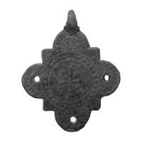

Catalog › CE-0280 · KIR2023-10
Cruce pandantiv-encolpion de bronz în formă de trifoliu, cat. 10, Muzeul Kırklareli
sec. XII–XIV (1101–1400) · loc necunoscut · Muzeul Kırklareli (Kırklareli Müzesi), Turcia, inv. 2019/33
medieval cross, bronz; c. XII–XIV (1101–1400); find spot unknown; kept at Muzeul Kırklareli (Kırklareli Müzesi), Turcia.


Identificare
- Categorie
- Altele
- Material
- Bronz
- Dimensiuni
- Î 33.5 × L 27 mm
Iconografie
- Descriere avers
- Cruce plată turnată, în formă de trifoliu cu patru foi, cu inel de suspendare; în față un medalion rotund cu un chenar de puncte, în care un motiv de cruce lărgită spre capete; în zonele exterioare motive vegetale pe câmpuri punctate; găurile din trei direcții îngreunează citirea compoziției.
- Revers
- Neidentificat
- Descriere revers
- O figură neidentificabilă din cauza deformării.
- Limba
- Fără inscripție
Datare și atribuire
- Datare
- sec. XII–XIV (1101–1400)
Descoperire
- Context
- Colecție (fără context)
- Coordonate
- 41.7351° N, 27.2252° E
- Precizia locului
- Loc de păstrare (loc de descoperire incert)
Păstrare și referințe
- Colecție
- Muzeul Kırklareli (Kırklareli Müzesi), Turcia
- Nr. inventar
- 2019/33
- Bibliografie
- S. Uygun Yazıcı, Kırklareli Müzesi Bizans Dönemi Madeni Haçları, în „Art-Sanat”, 20, 2023, p. 613–640 [Uygun Yazıcı 2023], p. 625, cat. nr. 10, reprodusă la G. 10 (p. 626). DOI: 10.26650/artsanat.2023.20.1290437
- Figura
- G. 10
- Planșe
- Uygun Yazıcı 2023, p. 626
- Observații
- Autorul îl numește „pandantif/enkolpion” (nu röliker) și îl compară cu piesa G. 12 din Colecția Halûk Perk. Datare în catalog: sec. XII–XIV; în concluzii autorul îl grupează în perioada bizantină mijlocie (sec. X–XII). Autorul spune că poate fi de origine constantinopolitană sau balcanică. Sursa nu spune dacă are cavitate pentru relicve. Intrat în muzeu prin cumpărare; sursa spune că toate piesele provin din Kırklareli și districtele din jur, fără loc precis de descoperire. Locul descoperirii nu e cunoscut cu precizie; punctul de pe hartă marchează locul de păstrare (Muzeul Kırklareli), nu locul descoperirii. Coordonate: nu sunt date în sursă.
Citare: Corpus Encolpiorum, CE-0280, Cruce pandantiv-encolpion de bronz în formă de trifoliu, cat. 10, Muzeul Kırklareli, https://vitaliejosanu1979-ux.github.io/primul-meu-proiect/piese/KIR2023-10/ (accesat 2026-10-17).